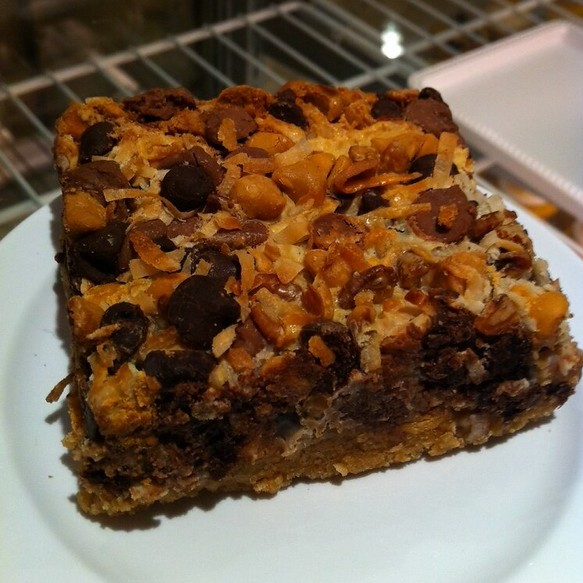

licensed under CC BY 2.0. Image cropped to 1:1 ratio.
Shortly after we moved here to Virginia in 2019, my mom's boss gave her some
seven-layer bars. Of course, my mom let me and my brothers have some, and we
all loved them. It's the three types of chocolates that make it taste that
good!
, my mom said. Anyway, My mom asked her boss for the recipe, and she
gave us a link to a website. Over time, we kept tweaking the ingredients and
procedure until it was perfected. By now, my brothers and I can list every
step by memory. We make these roughly once every two months just because of
how good they are, and my mom's boss still gifts her some every once in a
while.
Ingredients
| Quantity | Ingredient |
|---|---|
| 1 cup | Unsalted Butter |
| 2 packs (18 sheets) | Graham Crackers |
| 1 cup | Chocolate Chips |
| 1 cup | Butterscotch Chips |
| 1 cup | White Chocolate Chips |
| 1 cup | Chopped Pecans |
| 1 can (14 ounces) | Sweetened Condensed Milk |
| 1 1/3 cups | Shredded Coconut |
| Materials |
|---|
| 9x13 Baking Pan |
| Knife |
| Microwavable Bowl |
| Mortar (optional) |
Instructions
- Preheat oven to 350°F/175°C
- Use bowl to microwave butter in 10-second intervals until liquified, and pour into baking pan
- Smash graham crackers into fine pieces, by
- Crushing the package with your hands, or
- Using a mortar to crush the crackers in the bowl
- Pour graham cracker sand into pan and evenly press it out over the bottom of the pan
- Evenly spread chocolates and pecans
- Evenly sprinkle shredded coconut over the pan
- Pour condensed milk over the coconut
- Bake for 25 minutes or until golden brown
- Let cool to room temperature before cutting into 12 bars
Makes 12 roughly 3x4-inch bars
Estimated time to create (not including cooling): 45 minutes
Extra Tips
- You can cut it to create more, smaller bars
- Put coconut shreds on top of condensed milk if you want to enunciate the coconut's flavor
- You can replace pecans with any kind of nut, but pecans are simply the best
- If you want thinner bars, use half as much butter and graham crackers
- These bars be enjoyed cold or warm